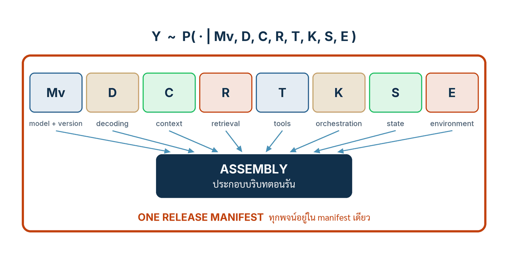

ในบทความนี้
- สมการ (1) — พฤติกรรมของระบบมาจากแปดพจน์ร่วมกัน ไม่ใช่จาก prompt ตัวเดียว
- กฎสองข้อที่สังเกตได้ กับผลที่ตามมา — ทุกพจน์ของสมการคือโปรแกรม จึงต้องถูก version
- ลงมือทำ 7 ขั้น — จากบัญชีแปดพจน์ สู่ release manifest ที่ pin ทุกอย่างด้วย hash
- Artifact ของน้องคราม — release-manifest v1 ฉบับเต็ม และโครงฟังก์ชัน assemble_context()
- Validation check — เจ็ดคำถามที่ต้องตอบด้วย artifact ไม่ใช่ด้วยความมั่นใจ
- ก้าวต่อไป — pin ครบทุกพจน์แล้ว แกนก็ยังพลาดเป็น และนั่นคือโจทย์ของตอนหน้า
In this post
- Equation (1) — system behaviour comes from eight terms jointly, not from one prompt
- Two observable rules and their consequence — every term of the equation is the program, so every term is versioned
- The seven steps — from an eight-term inventory to a release manifest that pins everything with hashes
- The KramKraft artifact — release-manifest v1 in full, plus the assemble_context() skeleton
- Validation check — seven questions that must be answered with artifacts, not with confidence
- The road ahead — every term pinned, and the core still errs: the next post's problem
🤔 ถ้าคืนนี้ vendor อัปเกรดโมเดลเป็นรุ่นใหม่แบบเงียบ ๆ โดยที่ prompt ของคุณ corpus ของคุณ และโค้ดของคุณไม่เปลี่ยนแม้แต่ตัวอักษรเดียว — พรุ่งนี้เช้า ระบบที่คุณดูแลอยู่ยังเป็น "ระบบเดิม" หรือไม่?
ตอนที่แล้ว The AI-OS Mental Model ปิดท้ายด้วยห้ารอยต่อที่การรับประกันแบบเดิมพัง — weights คืน sample ไม่ใช่ค่าตายตัว, context window เป็น RAM ที่ไม่มี memory protection, retrieval ไม่มีสัญญา read ที่นิ่ง, tool call ถูก "ขอ" เป็นภาษาธรรมชาติ, และ agent ไม่มี privilege separation ในตัว คำถามที่ผมทิ้งค้างไว้คือ ถ้าของที่เราเทลงไปใน RAM ผืนนั้น — system prompt, ข้อความที่ retrieval ดึงมา, คำอธิบาย tool, ประวัติการสนทนา — กำหนดพฤติกรรมของระบบได้มากขนาดนั้น มันมีสถานะเป็นอะไรกันแน่ในทางวิศวกรรม: เอกสารประกอบ? ค่า config ที่ ops ปรับได้ตามสะดวก? หรือโปรแกรม? เปเปอร์ตอบไว้ชัดและตอบทางเดียว: มันคือโปรแกรม[1]
คำตอบของทั้งตอนอยู่ในสมการเดียวกับประโยคเดียว สมการคือสมการ (1) ของเปเปอร์: Y ~ P(· | M_v, D, C, R, T, K, S, E) — พฤติกรรมที่ผู้ใช้เห็นแจกแจงตามเงื่อนไขร่วมของแปดพจน์ ไม่ใช่ตามโมเดลอย่างเดียว และไม่ใช่ตาม prompt อย่างเดียว ประโยคคือ การเปลี่ยนพจน์ใดพจน์หนึ่งของ (1) คือการเปลี่ยนโปรแกรม งานของวิศวกรรมบริบท (context engineering) จึงไม่ใช่ศิลปะการเลือกถ้อยคำใน prompt แต่เป็นวินัยทางวิศวกรรมของการทำให้ทุกพจน์ระบุตัวได้ ถูก version ถูกรีวิว และถูกปล่อยพร้อมกันในบันทึกกำกับรุ่นปล่อย (release manifest) ฉบับเดียว ในตอนนี้เราจะเดินเจ็ดขั้นจนได้ manifest ฉบับแรกของน้องคราม พร้อมโครงฟังก์ชันประกอบ context ที่บังคับให้ทั้งระบบเหลือเส้นทางผลิต context เพียงเส้นทางเดียว
1. สมการเดียวที่บอกว่าพฤติกรรมมาจากไหน
ข้อสรุปของหัวข้อนี้พูดได้ในประโยคเดียว: output ของระบบที่มี AI เป็นแกนไม่ได้แจกแจงตาม "โมเดล" แต่แจกแจงตามเงื่อนไขร่วมของแปดพจน์ และ context เป็นเพียงพจน์หนึ่งในนั้น — พจน์ที่พิเศษตรงที่มันถูกประกอบขึ้นใหม่ทุกคำขอด้วยโค้ดของเราเอง เปเปอร์เขียนไว้เป็นสมการ (1):[1]
Y ~ P( · | M_v, D, C, R, T, K, S, E ) ...(1)
C = A(q, R, T, S; θ_A){kind=link}

คำว่า context engineering ไม่ใช่คำใหม่ — Karpathy พูดถึงการที่คานงัดของวิศวกรย้ายมาอยู่ที่บริบทตอนรันไว้ในการบรรยายปี 2025[2] — แต่สิ่งที่เปเปอร์เพิ่มให้คือการทำให้คำนี้แข็งพอจะรับน้ำหนักทางวิศวกรรม: ระบุพจน์ให้ครบ นิยามแต่ละพจน์ให้ชัด แล้วผูกภาระ version control เข้ากับทุกพจน์เท่ากัน สำหรับนักพัฒนาที่ดูแลระบบจริง แปดพจน์นี้ไม่ใช่สัญลักษณ์ลอย ๆ — ทุกตัวชี้ไปที่ของที่จับต้องได้ในระบบของน้องคราม:
| พจน์ | คืออะไรในเปเปอร์ | ของจริงในระบบน้องคราม |
|---|---|---|
| M_v | โมเดลพร้อมรุ่น — frozen weights ที่ระบุ version | ไม่ใช่ "โมเดลของ vendor" ลอย ๆ แต่คือ identifier ที่ล็อกรุ่นใน config/model.json — คืนที่ vendor อัปเกรดเงียบ ๆ คือคืนที่พจน์นี้เปลี่ยนทั้งที่ diff ของ repo ว่างเปล่า |
| D | decoding policy — วิธีดึง sample จากโมเดล | temperature, top_p, seed, max_tokens ที่ใช้เรียกโมเดลทุกครั้ง — ล็อกได้เพื่อให้ replay ได้ แต่ล็อกแล้วก็ยังไม่ได้ล็อกความหมายที่โมเดลให้กับ context |
| C | context ที่ประกอบตอนรัน โดยโค้ด A ภายใต้ config θ_A | ทุกตัวอักษรที่โมเดลเห็นในคำขอนั้น: system prompt + passage ที่ดึงมา + คำอธิบาย tool + history — ผลิตโดย assemble_context() ไม่ใช่พิมพ์มือ |
| R | retrieval — รุ่นของ corpus กับ ranker และพารามิเตอร์ | รุ่นของ policy/ + catalog/ กับตัวจัดอันดับและค่า top_k — เปลี่ยน ranker โดยไม่แตะ prompt เลย ชุด passage ก็เปลี่ยน และคำตอบก็เปลี่ยน |
| T | tool semantics — ความหมายของเครื่องมือที่ระบบเรียกได้ | schema ของ refund(order_id, amount, reason) กับพฤติกรรมจริงของมันฝั่ง order store — เปลี่ยนชื่อพารามิเตอร์หรือขยายช่วงค่า คือเปลี่ยนทั้งพฤติกรรมโมเดลและพื้นผิวผลกระทบ |
| K | orchestration code — โค้ดที่จัดลำดับการทำงาน | ลูปแชทของน้องคราม: retrieve เมื่อไร เรียกโมเดลกี่รอบ retry อย่างไร ส่งต่อมนุษย์เมื่อไร — โค้ดชั้นนี้คือ Software 1.0 ที่ถือ control flow อยู่ |
| S | session state — สถานะของบทสนทนาหนึ่ง | history ของ session, ตัวตนลูกค้า, ผลของ tool call ก่อนหน้า — ลูกค้าคนเดิมถามประโยคเดิมใน session ใหม่ ก็เป็นอินพุตคนละตัวแล้ว |
| E | environment — สภาพแวดล้อมตอนรัน | โลกที่ระบบยืนอยู่ขณะตอบ: เวลา, สถานะจริงของ order store, พฤติกรรมของบริการปลายทาง — พจน์ที่บันทึกได้แต่ตรึงไม่ได้ จึงยิ่งต้องบันทึก |
C ไม่ใช่ string ที่ใครพิมพ์ — C คือผลลัพธ์ของฟังก์ชัน
บรรทัดที่สองของสมการสำคัญกับงานประจำวันยิ่งกว่าบรรทัดแรก C = A(q, R, T, S; θ_A) บอกว่า context ที่โมเดลเห็นในแต่ละคำขอคือผลลัพธ์ของโค้ดประกอบ A ที่รับคำถามของผู้ใช้ q ผลจาก retrieval คำอธิบาย tool และสถานะ session เข้ามา ภายใต้พารามิเตอร์ θ_A — template ที่ใช้ จำนวน passage สูงสุด จำนวน turn ของ history ที่แนบ ลำดับการวางบล็อก ถ้าวันนี้ระบบของคุณต่อ string ของ prompt จากห้าจุดในห้า handler คุณไม่ได้ "ยังไม่มี A" — คุณมี A ห้าตัวที่มองไม่เห็น ไม่มีชื่อ ไม่มี version และไม่มีใครรีวิว
มุมที่คนพลาดบ่อยที่สุดคือคิดว่า θ_A เป็นเรื่องจุกจิกทางเทคนิค ทั้งที่มันเป็นโปรแกรมพอ ๆ กับตัว template: เปลี่ยน max_passages จาก 6 เป็น 12 โดยไม่แตะ prompt สักคำ สิ่งที่โมเดลเห็นก็เปลี่ยน การแจกแจงของ Y ก็เปลี่ยน และพฤติกรรมที่ลูกค้าเจอก็เปลี่ยน — ทั้งหมดนั้นโดยไม่มีบรรทัดไหนของ "prompt" ขยับเลย
หลักฐานของ context ผูกอยู่กับโมเดลที่ให้ความหมายมัน
ประเด็นที่ลึกที่สุดของสมการ (1) ซ่อนอยู่ในรูปของมันเอง: C ยืนอยู่ข้าง M_v กับ D ในเครื่องหมายเงื่อนไขเดียวกัน เปเปอร์สรุปว่า context ตีความแยกจากโมเดลที่ให้ความหมายมันไม่ได้ — ตรึง C ไว้ทุกตัวอักษรแล้วเปลี่ยน M_v หรือ D การแจกแจงของ Y ก็เปลี่ยนทันที[1] ประโยคว่า "เราทดสอบ prompt นี้แล้ว" จึงเป็นข้ออ้างร่วมของทั้งชุด (C, M_v, D, R, T, ...) ไม่ใช่ข้ออ้างของ C เดี่ยว ๆ และหลักฐานของ context จึงพกข้ามรุ่นโมเดลไม่ได้: prompt ที่ผ่านชุดทดสอบมาแล้วบน M_v1 ยังไม่มีหลักฐานอะไรเลยบน M_v2 จนกว่าจะรันชุดทดสอบนั้นใหม่
นี่คือคำตอบของคำถามที่เปิดตอน: คืนที่ vendor อัปเกรดโมเดลเงียบ ๆ พจน์ M_v เปลี่ยน — ระบบของคุณกลายเป็นโปรแกรมคนละตัวแล้วตั้งแต่ก่อนคุณตื่น หลักฐานทั้งหมดที่เคยเก็บไว้กลายเป็นหลักฐานของโปรแกรมตัวเก่า และไม่มีเครื่องมือ diff ตัวไหนใน repo ของคุณเห็นการเปลี่ยนแปลงนี้เลย ถ้าคุณไม่ได้ pin รุ่นและบันทึกมันไว้เอง
💡 มุมมองของผม: ผมเลิกใช้คำว่า "prompt ที่ดี" แบบไม่มีบริบทไปแล้ว prompt ที่แชร์กันในอินเทอร์เน็ตมีสถานะเป็นแค่สมมติฐาน — มันเคยให้ผลดีที่ไหนสักแห่ง บนโมเดลรุ่นหนึ่ง decoding แบบหนึ่ง corpus แบบหนึ่ง จนกว่าคุณจะรันมันผ่านชุดทดสอบของคุณเอง บน (M_v, D, R, T) ของคุณเอง มันยังไม่มีหลักฐานสักชิ้นในระบบของคุณ กฎที่ผมใช้กับทีมสั้นมาก: ยืม prompt ได้ แต่ยืมหลักฐานไม่ได้
2. ทุกพจน์คือโปรแกรม จึงต้องถูก version ทั้งหมด
ข้อสรุปของหัวข้อนี้: prompts, โค้ดประกอบ context, retrieval config, tool schemas, ชุดประเมิน และ manifest ของโมเดล ทั้งหมดเป็นของ codebase — version ด้วยกัน รีวิวด้วยกัน ปล่อยด้วยกัน — เพราะการเปลี่ยนชิ้นใดชิ้นหนึ่งคือการ deploy โปรแกรมรุ่นใหม่ เหตุผลไม่ใช่ความเป็นระเบียบ แต่มาจากกฎสองข้อที่สังเกตได้ ซึ่งเปเปอร์ใช้แยก "ของที่กำหนดพฤติกรรม" ออกจาก "ของประกอบฉาก"[1]
กฎสองข้อที่ทำให้คำว่า "ควบคุม" เป็นเรื่องสังเกตได้
- กฎ control surface — มีพฤติกรรมที่ปล่อยแล้ว (released behaviour) อย่างน้อยหนึ่งรายการที่ output ของโมเดลเป็นตัวกำหนดอย่างมีนัย ตามที่บันทึกอยู่ในร่องรอยการตัดสินใจ (decision trace) — ไม่ใช่ตามที่ทีมรู้สึกหรือสไลด์อ้าง คำตอบที่ปล่อยถึงลูกค้าและ tool call ที่ถูกอนุมัตินับทั้งคู่
- กฎ load-bearing — เมื่อทำการทดสอบถอดโมเดลออก (removal ablation) แล้วแทนที่ด้วย fallback ที่ประกาศไว้ อัตราสำเร็จของงานบนชุดทดสอบคงที่ตกต่ำกว่าสัดส่วนที่ประกาศล่วงหน้า — โมเดลไม่ใช่ของประดับ แต่รับน้ำหนักจริง
สองกฎนี้มาจากนิยาม AI-core ในตอนแรกของซีรีส์ แต่ผลเชิงตรรกะของมันตกลงที่หัวข้อนี้พอดี: ถ้า output ของโมเดลเป็นตัวกำหนดพฤติกรรมที่ปล่อยแล้วจริง และโมเดลขาดไม่ได้จริง ทุกสิ่งที่กำหนดรูปของ output นั้น — ทุกพจน์ของ (1) ที่ทีมแก้ไขได้ — ก็กำลังควบคุมพฤติกรรมที่ปล่อยแล้วของระบบอยู่ด้วยเช่นกัน เปเปอร์จึงสรุปข้อบังคับไว้สั้นที่สุดเท่าที่จะสั้นได้:
prompts, โค้ดประกอบ context, retrieval config, tool schemas, ชุดประเมิน และ manifest ของโมเดล — ทั้งหมดเป็นของ codebase: version ร่วมกัน รีวิวร่วมกัน ปล่อยร่วมกัน การเปลี่ยนพจน์ใดพจน์หนึ่งของ (1) คือการเปลี่ยนโปรแกรม[1]
รายการที่ต้องเข้า repo — และสิ่งที่โค้ดยังถือไว้
- prompts และ template ทุกไฟล์ — system prompt, few-shot examples, template ของคำตอบ — ไฟล์ธรรมดาที่ diff ได้ ไม่ใช่ช่องข้อความใน console ของ vendor
- โค้ดประกอบ context — ฟังก์ชัน A พร้อม θ_A ทั้งชุด: template ที่เลือกใช้, จำนวน passage, จำนวน turn ของ history — config ของ A เปลี่ยนพฤติกรรมเท่ากับ template เปลี่ยน
- retrieval config — id รุ่นของ corpus, ชื่อ ranker กับพารามิเตอร์, และ allow-list ของแหล่งที่ยอมรับ — ครึ่งหนึ่งของพจน์ R ที่มักไม่มีใครเป็นเจ้าของ
- tool schemas — JSON Schema ของทุก tool พร้อมช่วงพารามิเตอร์ — ทั้งเอกสารสำหรับโมเดลและด่านตรวจสำหรับระบบ ในไฟล์เดียวกัน
- ชุดประเมิน — golden set, ชุด adversarial, threshold ที่ใช้ตัดสิน — เพราะ "ผ่านการทดสอบ" เป็นข้ออ้างที่ผูกกับรุ่นของชุดทดสอบด้วย
- model manifest — identifier ที่ล็อกรุ่นของ M_v กับ decoding policy D — พจน์สองตัวที่อยู่นอก repo โดยธรรมชาติ จึงต้องถูกดึงเข้ามาด้วยการบันทึก
ประโยคถัดมาของเปเปอร์กันความเข้าใจผิดที่พบบ่อยที่สุดไว้พอดี: ของเหล่านี้เข้ามาอยู่เคียงข้างโค้ด ด้วยวินัยเดียวกันทุกประการ แต่มันไม่ได้กลายเป็น source code — โค้ดยังคงถือ control flow, interface และการ mediation ที่ทุกอย่างพึ่งพิงอยู่[1] อย่าตีความตอนนี้เป็นคำเชิญให้ย้ายตรรกะไปไว้ใน prompt ทิศทางที่ถูกคือขาเข้า: ดึงของที่เคยลอยอยู่นอกวินัยเข้ามาอยู่ใต้วินัยของโค้ด ความคาดหวังเดียวกันนี้ปรากฏใน NIST AI RMF ในภาษาของ governance: องค์ประกอบที่กำหนดพฤติกรรมของระบบ AI ต้องถูกทำบัญชี จัดทำเอกสาร และตรวจย้อนได้ตลอดวงจรชีวิต[4]
ภาพที่ผมอยากให้ติดตาไปจากหัวข้อนี้มีภาพเดียว: บ่ายวันศุกร์ ใครสักคนในทีมเปิด dashboard ของ vendor แก้ system prompt ตรงนั้นสองประโยคแล้วกด save — ไม่มี branch ไม่มี PR ไม่มีรีวิว ไม่มี rollback และไม่มีร่องรอยใน git ในภาษาของสมการ (1) เหตุการณ์นั้นคือการแก้พจน์ C ของโปรแกรม production แล้ว deploy ทันทีข้ามหัวทุกด่านที่องค์กรสร้างมาทั้งหมด
3. ลงมือทำ 7 ขั้น
เจ็ดขั้นของตอนนี้เดินจากบัญชีรายพจน์ไปจบที่ release manifest ฉบับแรก แต่ละขั้นจบด้วย artifact ที่คอมมิตเข้า repo ได้จริง ไม่ใช่มติในที่ประชุม ตัวเลขทุกตัวในตัวอย่าง (วงเงิน 2,000 บาท, top_k = 6, seed) เป็นตัวเลขของบทเรียนที่ผมตั้งให้น้องคราม ไม่ใช่ค่าที่เปเปอร์แนะนำและไม่ใช่ค่าแนะนำสากล
ขั้นที่ 1 — ทำบัญชีแปดพจน์ของระบบคุณ พร้อมค่าปัจจุบันและที่อยู่
เปิดไฟล์เดียว ตอบสองคำถามต่อพจน์: ค่าปัจจุบันคืออะไร และ มันอยู่ที่ไหน ทำทีละพจน์จนครบแปด ความจริงที่มักโผล่ตอนทำจริงคือบางพจน์ไม่มีใครในทีมตอบได้ — ranker ใช้ค่า default ของ vendor ที่ไม่มีใครเคยอ่าน, system prompt ตัวจริงอยู่ใน dashboard ไม่ได้อยู่ใน repo, ไม่มีใครแน่ใจว่า model identifier ล็อกรุ่นหรือเป็น alias บัญชีที่มีช่อง "ไม่รู้" คือบัญชีที่ซื่อสัตย์ และช่องเหล่านั้นคือรายการงานของขั้นถัด ๆ ไปทั้งหมด
# terms.yaml — บัญชีแปดพจน์ของสมการ (1) สำหรับน้องคราม (สภาพก่อนจัดระเบียบ)
M_v: "hosted-llm @ ???" # อยู่ที่: console ของ vendor — ยังไม่ยืนยันว่าล็อกรุ่น
D: "temp=0.3 (ใครตั้ง? เมื่อไร?)" # อยู่ที่: กระจายอยู่ในโค้ดเรียก API สองจุด
C: "ต่อ string ใน handler" # อยู่ที่: chat.py, faq.py, escalate.py — สามจุด!
R: "corpus=policy/+catalog/" # อยู่ที่: bucket จัดเก็บ — ไม่มี version id; ranker = default
T: "refund" # อยู่ที่: schema เขียน inline ในโค้ด ไม่มีเลขรุ่น
K: "ลูปแชท + retry 2 ครั้ง" # อยู่ที่: app/loop.py — ส่วนเดียวที่อยู่ใน repo ครบ
S: "history 10 turn + ตัวตนลูกค้า" # อยู่ที่: session store
E: "order store, เวลา, ภาษา" # อยู่ที่: ไม่เคยถูกบันทึกลง trace เลยขั้นที่ 2 — รวมการประกอบ context ให้เหลือฟังก์ชันเดียว
เขียน A ให้เป็นฟังก์ชันจริง มีชื่อจริง มีลายเซ็นตรงกับสมการ: รับ q, ผลจาก retrieval, ชุด tool, สถานะ session และ θ_A — คืน context หนึ่งก้อนพร้อมหลักฐานประกอบ กติกามีข้อเดียวแต่ต้องเด็ดขาด: โค้ดส่วนใดอยากได้ context ต้องเรียกฟังก์ชันนี้เท่านั้น ห้ามมี string concat ของ prompt หลงเหลืออยู่ตาม handler แม้แต่บรรทัดเดียว เพราะทางลัดหนึ่งทางที่เหลืออยู่คือ A อีกตัวที่ไม่มีใคร version สำหรับน้องครามแปลว่ายุบสามจุดใน chat.py, faq.py และ escalate.py ให้เหลือหนึ่ง — โครงเต็มของฟังก์ชันอยู่ในหัวข้อ 4
# app/context.py — เส้นทางเดียวของระบบที่ผลิต context ได้
def assemble_context(q, retrieval, tools, state, theta):
"""C = A(q, R, T, S; θ_A) — คืน (context, บันทึกหลักฐานสำหรับ trace)"""
...ขั้นที่ 3 — pin โมเดลและ decoding policy
M_v ต้องเป็น identifier ที่ล็อกรุ่น ไม่ใช่ alias ลอยตัวอย่าง "latest" ที่ vendor เลื่อนได้เอง และ D ต้องถูกบันทึกครบทุกค่า: temperature, top_p, seed, max_tokens จำบทเรียนจากตอนที่แล้ว: deterministic decoding ตัด sampling variance ออกได้ แต่ตัดความไวต่อรุ่นโมเดลไม่ได้[1] — seed จึงไม่ใช่เครื่องรางของความถูกต้อง มันคือเงื่อนไขขั้นต่ำที่ทำให้การ replay และการไล่บั๊กเป็นไปได้ ถ้า vendor ของคุณไม่มีรุ่นที่ล็อกได้จริง ให้บันทึกข้อจำกัดนั้นลงบัญชีความเสี่ยงแทนที่จะแกล้งลืม
// config/model.json — พจน์ M_v กับ D ในไฟล์เดียว ถูก version ใน repo
{
"core": { "provider": "hosted", "model": "hosted-llm",
"version": "2026-08-14", "alias_allowed": false },
"decoding": { "temperature": 0, "top_p": 1,
"seed": 20260901, "max_tokens": 700 }
}ขั้นที่ 4 — snapshot corpus และ retrieval config
พจน์ R มีสองครึ่งและต้อง pin ทั้งคู่ ครึ่งแรกคือ corpus: ให้ policy/ กับ catalog/ อยู่ใน git และทุกสถานะที่ระบบใช้ตอบลูกค้าต้องอ้างได้ด้วย id เดียว (เช่น git tag) — แก้นโยบายคืนสินค้าหนึ่งย่อหน้า = corpus รุ่นใหม่ = ระบบรุ่นใหม่ ครึ่งหลังคือ retrieval config: ชื่อ ranker พารามิเตอร์ และจำนวน passage ที่ดึง — ของที่เคยเป็น default ของ vendor ต้องกลายเป็นค่าที่ประกาศไว้ในไฟล์ อ่านได้ diff ได้
# retrieval.yaml — ครึ่งหลังของพจน์ R ที่มักไม่มีเจ้าของ
corpus_snapshot: "kramkraft-corpus@2026-09-05" # git tag ของ policy/ + catalog/
ranker: "bm25"
ranker_params: { k1: 1.2, b: 0.75 }
top_k: 6
source_allow_list: ["policy/", "catalog/"] # ที่มาของ passage ที่ยอมรับขั้นที่ 5 — ประกาศ tool schema เป็น artifact ที่มี version
พจน์ T ของน้องครามมี tool เดียว แต่เป็น tool ที่มีผลจริงและย้อนไม่ได้ตั้งแต่ payment processor รับคำสั่ง: refund ประกาศ schema ของมันเป็นไฟล์ JSON Schema แยกจากโค้ด ระบุ type, pattern, ช่วงพารามิเตอร์ และปิดท้ายด้วย additionalProperties: false ไฟล์นี้ทำหน้าที่สองอย่างพร้อมกัน — เป็นคำอธิบายที่โมเดลเห็น และเป็นด่านของการบังคับเชิงโครงสร้าง (hard enforcement) ที่ตอนที่ 8 จะเสียบเข้ากับ execution rail วันนี้งานมีแค่ทำให้มันเป็นไฟล์ มีเลขรุ่น และถูก diff ได้
// tools/refund.schema.json — v1.0.0 (วงเงินเป็นตัวเลขของบทเรียน)
{
"$id": "tools/refund.schema.json", "version": "1.0.0",
"type": "object", "required": ["order_id", "amount", "reason"],
"properties": {
"order_id": { "type": "string", "pattern": "^KK-[0-9]{6}$" },
"amount": { "type": "number", "minimum": 1, "maximum": 2000 },
"reason": { "type": "string", "maxLength": 200 }
},
"additionalProperties": false
}ขั้นที่ 6 — ย้าย prompt เข้า repo และให้ PR ของ prompt เป็น PR ของโปรแกรม
ย้ายทุก prompt และ template ออกจาก dashboard และออกจาก string ในโค้ด มาเป็นไฟล์ใน prompts/ แล้วผูกเจ้าของรีวิวด้วย CODEOWNERS เหมือนโมดูลอื่นทุกประการ นิยามของ "เสร็จ" ในขั้นนี้ชัดเจน: การแก้คำเดียวใน system prompt ต้องเดินเส้นทางเดียวกับการแก้ฟังก์ชันหนึ่งบรรทัด — มี diff มีผู้รีวิวที่เข้าใจทั้งเสียงของแบรนด์และผลต่อพฤติกรรม มีจุด rollback และหลังจากนี้ ประวัติของทุกถ้อยคำที่ระบบเคยใช้พูดกับลูกค้าจะอยู่ใน git log ไม่ใช่ในความทรงจำของใครคนหนึ่ง
prompts/
system.th.md # เสียงของน้องคราม ขอบเขตงาน ข้อห้าม
system.en.md
templates/answer.j2 # โครงคำตอบที่ A ใช้ประกอบ context
# CODEOWNERS — prompt คือโปรแกรม จึงมีเจ้าของรีวิวเหมือนโปรแกรม
prompts/ @kramkraft/assistant-teamขั้นที่ 7 — ประกอบ release manifest ที่ pin ทุกพจน์ด้วย hash
ขั้นสุดท้ายรวบผลของขั้น 1–6 เข้าเป็นไฟล์เดียว: อะไรที่เป็นไฟล์ใน repo → เก็บ hash, อะไรที่เป็น corpus → เก็บ snapshot id, อะไรที่เป็นบริการภายนอก → เก็บ identifier กับรุ่นที่ล็อกแล้ว เกณฑ์ตัดสินของขั้นนี้คือคำถามเดียวที่ทีม ops ควรตอบได้ในสิบวินาที: "production ตอนนี้รันอะไรอยู่" — คำตอบต้องเป็นไฟล์เดียวที่อ่านแล้วรู้ครบทุกพจน์ ไม่ใช่การไล่เปิดห้าระบบ
$ shasum -a 256 prompts/templates/answer.j2 # → a41f...9c2e
$ shasum -a 256 tools/refund.schema.json # → 03e8...77b1
$ git rev-parse --short corpus-2026-09-05 # → 7d3b1a2
# ค่าทั้งหมดไหลลง release-manifest.json — ฉบับเต็มอยู่หัวข้อ 44. Artifact ของน้องคราม — release-manifest v1 และ assemble_context()
นี่คือ artifact สองชิ้นที่ตอนนี้ทิ้งไว้ให้ระบบของน้องคราม และเป็นฐานที่ตอนถัด ๆ ไปของซีรีส์จะเขียนต่อ ช่องของ manifest ตรงกับรายการใน conformance profile ของเปเปอร์ (§6.1): core กับ decoding policy, hash ของ context template, corpus snapshot กับ provenance policy, hash ของ tool registry, control profile กับ thresholds และ hash ของ evaluation suite[1] สองช่องสุดท้ายเป็น placeholder อย่างจงใจ — สัญญากับ threshold เป็นงานของตอนที่ 7 ส่วนชุดทดสอบทองคำ (golden set) กับ hash ของชุดประเมินเป็นงานของตอนที่ 9 — การมีช่องว่างที่ประกาศไว้ดีกว่าการไม่มีช่อง เพราะช่องว่างที่ประกาศแล้วทวงตัวเองได้
release-manifest v1 — ฉบับเต็ม
// release-manifest.json — kramkraft-release-2026-09-08-r1
{
"manifest_id": "kramkraft-release-2026-09-08-r1",
"task_set": "customer-support-th: คำถามออเดอร์ สินค้า และการคืนเงิน",
"core": {
"model": "hosted-llm",
"version": "2026-08-14",
"alias_allowed": false,
"decoding": { "temperature": 0, "top_p": 1,
"seed": 20260901, "max_tokens": 700 }
},
"context_template": {
"path": "prompts/templates/answer.j2",
"sha256": "a41f...9c2e",
"assembler": "app/context.py::assemble_context",
"theta_A": { "max_passages": 6, "history_turns": 10 }
},
"corpus_snapshot": {
"id": "kramkraft-corpus@2026-09-05",
"provenance_policy": "รับเฉพาะ passage จาก policy/ และ catalog/ เท่านั้น"
},
"tool_registry": {
"sha256": "03e8...77b1",
"tools": [ { "name": "refund",
"schema": "tools/refund.schema.json",
"version": "1.0.0" } ]
},
"control_profile": { "status": "PLACEHOLDER — ตอนที่ 7: สัญญา + thresholds" },
"evaluation_suite": { "status": "PLACEHOLDER — ตอนที่ 9: golden set + hash" }
}ภาษาข้อกำหนดของ manifest ผมยืมจาก RFC 2119 ตรง ๆ ตามแนวของ conformance profile ในเปเปอร์: ทุก release MUST อ้าง manifest ที่กรอกครบทุกช่องที่ไม่ใช่ placeholder, การเปลี่ยนไฟล์ใดที่ถูก hash ไว้ MUST ออก manifest รุ่นใหม่, และระบบ SHOULD ปฏิเสธการ start เมื่อ hash ที่คำนวณจริงไม่ตรงกับ manifest[3] คำกริยาเหล่านี้ไม่ใช่สำนวนตกแต่ง — MUST คือเงื่อนไขที่ถ้าละเมิดแล้ว conformance ล้มทันที ส่วน SHOULD คือข้อที่เบี่ยงได้เฉพาะเมื่อบันทึกเหตุผลไว้เป็นลายลักษณ์
โครง assemble_context() — เส้นทางเดียว พร้อมหลักฐานในตัว
# app/context.py — C = A(q, R, T, S; θ_A) ของน้องคราม
import hashlib
def assemble_context(q, retrieval, tools, state, theta):
"""เส้นทางเดียวของระบบที่ผลิต context — คืนทั้ง context และหลักฐาน"""
passages = retrieval.search(q, top_k=theta["max_passages"])
for p in passages: # provenance เป็นการ์ดของตอนที่ 8
assert p.source in retrieval.source_allow_list
ctx = render(theta["template"],
system=load_prompt("prompts/system.th.md"),
question=q,
passages=passages,
tools=tools.public_schemas(),
history=state.last_turns(theta["history_turns"]))
record = { # ร่องรอยการตัดสินใจของพจน์ C
"manifest_id": theta["manifest_id"],
"context_sha256": hashlib.sha256(ctx.encode()).hexdigest(),
"corpus_snapshot": retrieval.snapshot_id,
"passage_sources": [p.source for p in passages],
}
trace.append("context_assembled", record)
return ctx, recordโครงนี้ทำสามอย่างที่ข้อความใน prompt ทำเองไม่ได้ หนึ่ง มันบังคับเส้นทางเดียว — จุดต่อ string ที่เคยกระจายในสาม handler ตายไปแล้ว สอง มันเก็บหลักฐานทุกครั้งที่ทำงาน: hash ของ context ที่ประกอบเสร็จ, รุ่นของ corpus, และที่มาของทุก passage ไหลลงร่องรอยการตัดสินใจโดยไม่ต้องมีใครจำ สาม มันทำให้การ replay เป็นไปได้จริง: request เดิมกับ manifest เดิมต้องให้ context เดิม byte-for-byte — ซึ่งจะกลายเป็นแถวสำคัญของ validation check ข้างล่างทันที
💡 มุมมองของผม: ผมถือ manifest เป็นหน่วยของการ deploy ไม่ใช่เอกสารแนบท้าย ประโยคทดสอบมีสองประโยคและใช้ได้ทุกสัปดาห์ ไม่ใช่เฉพาะวัน launch: ถ้า diff ระหว่างสอง release ไม่ทำให้ค่าใดใน manifest ขยับเลย แปลว่าคุณไม่ได้เปลี่ยนระบบ และถ้าพฤติกรรมของระบบเปลี่ยนโดยที่ manifest ไม่ขยับ แปลว่ายังมีพจน์ของ (1) ที่หลุดบัญชีอยู่ — ประโยคหลังคือสัญญาณเตือนที่มีค่าที่สุดที่ manifest ให้ฟรี
5. Validation check — ตรวจระบบของคุณเองด้วย artifact
กติกาเดียวกับทุกตอนของซีรีส์: คำตอบ "ผ่าน" ต้องชี้ artifact ได้ ไม่ใช่ชี้ความมั่นใจ ไล่ตารางนี้กับระบบของคุณเอง — แถวไหนที่ artifact ยังไม่มีตัวตน แถวนั้นคือ backlog ของสัปดาห์นี้ ไม่ใช่ของ quarter หน้า
| # | คำถาม | artifact ที่พิสูจน์คำตอบ |
|---|---|---|
| 1 | บอกได้ไหมว่าแปดพจน์ของ (1) ในระบบคุณมีค่าอะไร และแต่ละค่าอยู่ที่ไหน | terms.yaml ที่คอมมิตแล้ว ครบแปดแถว — ช่อง "ไม่รู้" มีได้ แต่ทุกช่องต้องมีเจ้าของและกำหนดปิด |
| 2 | request เดิม replay กับ manifest เดิม ให้ context เดิม byte-for-byte หรือไม่ | ค่า context_sha256 สองค่าจากการรันสองครั้งใน trace — ต้องเท่ากันทุกหลัก แสดงคู่กันได้ |
| 3 | ทั้ง codebase มีกี่จุดที่ประกอบ context ได้ | ผลตรวจใน CI ที่ยืนยันว่าการ render/ต่อ prompt อยู่ใน assemble_context() แห่งเดียว — ไม่ใช่คำยืนยันปากเปล่า |
| 4 | โมเดลถูกล็อกรุ่นจริง หรือแค่เชื่อว่าล็อก | บรรทัด core.version ใน manifest ที่เป็นรุ่นระบุชัด (ไม่ใช่ alias) + log ที่ระบบปฏิเสธ start เมื่อรุ่นจริงไม่ตรง |
| 5 | คำตอบที่ส่งให้ลูกค้าเมื่อวานนี้ ใช้ corpus รุ่นไหนตอบ | แถว trace ของ ticket นั้น ที่อ้าง corpus_snapshot id ซึ่งโยงกลับถึง manifest ที่ active ในเวลานั้น |
| 6 | การแก้ prompt ครั้งล่าสุด ผ่านตาใครมาบ้าง | PR ที่ merge แล้วของไฟล์ใน prompts/ พร้อมชื่อผู้รีวิว — ไม่ใช่ประวัติการแก้ใน console ของ vendor |
| 7 | การเปลี่ยน tool schema ครั้งล่าสุด ออก release ใหม่หรือไม่ | คู่คอมมิตที่ hash ของ tool_registry ใน manifest ขยับพร้อม schema — หรือ log ของ CI gate ที่ fail เมื่อ hash ค้าง |
สังเกตว่าไม่มีแถวไหนถามว่า "คำตอบของระบบดีไหม" เลยสักแถว — ทั้งเจ็ดแถวถามแค่ว่าระบบระบุตัวได้หรือไม่ นั่นไม่ใช่ความบังเอิญ มันคือขอบเขตที่ตอนนี้รับผิดชอบ และเป็นขอบเขตที่ต้องเสร็จก่อนคำถามเรื่องคุณภาพจะมีความหมาย
6. ก้าวต่อไป
ถ้าจะพกอะไรกลับไปจากตอนนี้เพียงหนึ่งอย่าง ผมขอเลือกการเปลี่ยนคำถามในทีม: จาก "ใครแก้ prompt" เป็น "release ไหนแก้พจน์ไหนของ (1)" คำถามแรกมองระบบเป็นโมเดลบวกของตกแต่ง คำถามหลังมองระบบเป็นโปรแกรมแปดพจน์ที่ทุกพจน์มีเจ้าของ มีรุ่น และมีประวัติ — ซึ่งเป็นสิ่งที่มันเป็นจริง ๆ มาตลอด เพียงแต่บัญชียังไม่เคยถูกเขียน
งานที่เริ่มได้ในสัปดาห์นี้มีสามชิ้นและเรียงจากถูกไปแพง หนึ่ง เขียน terms.yaml ของระบบตัวเองให้จบภายในหนึ่งชั่วโมง — ค่าของมันอยู่ที่ช่อง "ไม่รู้" ที่มันบังคับให้เราเขียนออกมา สอง ยุบเส้นทางประกอบ context ให้เหลือหนึ่งฟังก์ชัน — งานนี้เจ็บที่สุดแต่ปลดล็อกแถว replay ของ validation check สาม เจรจาย้าย system prompt ตัวจริงจาก dashboard เข้า repo ให้ได้หนึ่งไฟล์ — แถวที่ 6 ของตารางจะเปลี่ยนสถานะทันที และทีมจะได้เห็นด้วยตาว่า PR ของ prompt หน้าตาเป็นอย่างไร
สิ่งที่ตอนนี้ไม่ได้ตอบ — และจงใจไม่ตอบ — คือคำถามที่อยู่ถัดไปพอดี: ต่อให้ pin ครบทุกพจน์ hash ตรงทุกช่อง replay ได้ byte-for-byte แกนที่อยู่กลางสมการก็ยังผิดเป็น ผิดอย่างคล่องแคล่ว และผิดด้วยความมั่นใจเต็มเปี่ยม manifest ทำให้ระบบระบุตัวได้ แต่ไม่ได้ทำให้มันถูก การออกแบบบนสมมติฐานว่าแกนคืออัจฉริยะที่พลาดเป็น — แต่งข้อเท็จจริงได้ เก่งไม่สม่ำเสมอ จำอะไรไม่ได้ หูเบา และมั่นใจไม่ตรงกับความจริง — คือทั้งตอนของตอนถัดไป
🎯 สิ่งสำคัญที่ต้องจำ
- สมการ (1) = Y ~ P(· | M_v, D, C, R, T, K, S, E) — พฤติกรรมแจกแจงตามแปดพจน์ร่วมกัน: โมเดล+รุ่น, decoding, context, retrieval, tools, orchestration, session state, environment
- Context (C) = ผลลัพธ์ของโค้ดประกอบ A(q, R, T, S; θ_A) — ไม่ใช่ string ที่พิมพ์มือ และ θ_A ก็เป็นโปรแกรมพอ ๆ กับ template
- หลักฐานไม่พกข้ามรุ่น = ตรึง C แล้วเปลี่ยน M_v หรือ D การแจกแจงก็เปลี่ยน — prompt ที่ทดสอบบนรุ่นหนึ่งยังไม่มีหลักฐานบนอีกรุ่นจนกว่าจะรันชุดทดสอบใหม่
- กฎสองข้อที่สังเกตได้ = control surface (พฤติกรรมที่ปล่อยแล้วถูกกำหนดโดย model output ตาม decision trace) + load-bearing (removal ablation ล้มเกินสัดส่วนที่ประกาศล่วงหน้า)
- ทุกพจน์เข้า repo = prompts · โค้ดประกอบ · retrieval config · tool schemas · ชุดประเมิน · model manifest — version รีวิว ปล่อยพร้อมกัน โดยโค้ดยังถือ control flow และ mediation
- Release manifest = บันทึกกำกับรุ่นปล่อยที่ pin ทุกพจน์ด้วย hash — หน่วยของการ deploy และคำตอบสิบวินาทีของคำถาม "production รันอะไรอยู่"
อ้างอิง
ตรวจสอบทุกแหล่งเมื่อ 8 กันยายน 2026 (เวลาประเทศไทย) · ป้ายหลักฐานสี่แบบ: Law ตัวบทกฎหมายหรือประกาศทางการ · Standard มาตรฐานหรือกรอบทางการที่เผยแพร่แล้ว · Study งานวิจัยหรือสัญญาณภาคสนาม · Synthesis การสังเคราะห์ของผู้เขียนหรือแหล่งที่ไม่ใช่งานวิจัย
- Synthesis Anirach Mingkhwan. Engineering AI-Core Systems: A Reference Architecture and Assurance Contract for Software 3.0 — CreativeLAB, FITM, KMUTNB, 2026. เอกสารที่ผู้เขียนจัดหาให้ ยังไม่ตีพิมพ์ ไม่มี URL สาธารณะ จึงไม่มีลิงก์และไม่มีวันเข้าถึง. รองรับ: สมการ (1) กับนิยามของพจน์ทั้งแปดและรูป C = A(q, R, T, S; θ_A) ข้อความว่า context ตีความแยกจากโมเดลไม่ได้และหลักฐานของ context ไม่พกข้ามรุ่นโมเดล กฎ control-surface และกฎ load-bearing ข้อสรุปว่าการเปลี่ยนพจน์ใดของ (1) คือการเปลี่ยนโปรแกรม รายการ artifact ที่ต้องเข้า codebase พร้อมเงื่อนไขว่าโค้ดยังถือ control flow กับ mediation และรายการช่องของ release manifest ตาม conformance profile §6.1 ที่หัวข้อ 4 ใช้ทั้งหมด
- Synthesis Karpathy, A. Software Is Changing (Again) — การบรรยายที่ AI Startup School, 2025. ไม่มี URL อ้างอิงสาธารณะจึงไม่ใส่ลิงก์และไม่มีวันเข้าถึง. รองรับ: กรอบความคิด Software 3.0 และการที่คานงัดของวิศวกรย้ายมาอยู่ที่บริบทตอนรัน — อ้างเป็นบริบททางความคิดของคำว่า context engineering เท่านั้น ไม่ใช่แหล่งของสมการ กฎ หรือข้อบังคับใดในตอนนี้
- Standard Bradner, S. Key words for use in RFCs to Indicate Requirement Levels — RFC 2119 / BCP 14, 1997. doi.org — เข้าถึง 2026-09-08. รองรับ: ความหมายของระดับคำข้อกำหนด MUST / SHOULD / MAY ที่หัวข้อ 4 ใช้เขียนข้อกำหนดของ release manifest ตามแนว conformance profile ของเปเปอร์
- Standard NIST. Artificial Intelligence Risk Management Framework (AI RMF 1.0) — NIST AI 100-1, 2023. nist.gov — เข้าถึง 2026-09-08. รองรับ: ความคาดหวังเชิงธรรมาภิบาลว่าองค์ประกอบของระบบ AI และที่มาของมันควรถูกทำบัญชี จัดทำเอกสาร และตรวจย้อนได้ตลอดวงจรชีวิต — อ้างในระดับกรอบโดยรวม ไม่ได้อ้างข้อกำหนดรายข้อของเอกสาร
🤔 If your vendor silently upgrades the model to a new version tonight — while your prompt, your corpus and your code do not change by a single character — is the system you maintain still "the same system" tomorrow morning?
The previous post, The AI-OS Mental Model, closed on five seams where the classical guarantees break — weights return a sample rather than a fixed value, the context window is RAM with no memory protection, retrieval has no stable read contract, tool calls are "requested" in natural language, and agents carry no built-in privilege separation. The question I left hanging was this: if the things we pour into that RAM — the system prompt, the passages retrieval brings back, the tool descriptions, the conversation history — determine system behaviour to that degree, what exactly is their engineering status: documentation? Config that ops can tune at will? Or program? The paper answers plainly and answers one way: it is program.[1]
The whole post's answer fits in one equation and one sentence. The equation is the paper's equation (1): Y ~ P(· | M_v, D, C, R, T, K, S, E) — the behaviour a user sees is distributed conditional on eight terms jointly, not on the model alone and not on the prompt alone. The sentence is: a change to any term of (1) is a change to the program. The work of context engineering is therefore not the art of choosing words in a prompt but the engineering discipline of making every term identifiable, versioned, reviewed, and released together in a single release manifest. In this post we walk seven steps to KramKraft's first manifest, plus the skeleton of a context-assembly function that forces the whole system down to exactly one path that can produce context.
1. One Equation That Says Where Behaviour Comes From
This section's conclusion fits in one sentence: the output of an AI-core system is not distributed according to "the model" but according to the joint condition of eight terms, and context is only one of them — special because it is reassembled on every request by our own code. The paper writes it as equation (1):[1]
Y ~ P( · | M_v, D, C, R, T, K, S, E ) ...(1)
C = A(q, R, T, S; θ_A)The phrase context engineering is not new — Karpathy described the engineer's leverage moving to runtime context in his 2025 talk[2] — but what the paper adds is the stiffness the phrase needs to carry engineering weight: enumerate the terms completely, define each one precisely, and attach the version-control obligation to every term equally. For a developer maintaining a real system, these eight terms are not floating symbols — every one of them points at something tangible in the KramKraft system:
| Term | What it is in the paper | The real thing in the KramKraft system |
|---|---|---|
| M_v | The model with its version — frozen weights at a stated version | Not "the vendor's model" in the abstract, but a version-locked identifier in config/model.json — the night the vendor silently upgrades is the night this term changes while your repo diff stays empty |
| D | Decoding policy — how a sample is drawn from the model | The temperature, top_p, seed and max_tokens used on every call — lockable so that replay is possible, but locking them still does not lock the meaning the model gives the context |
| C | Context assembled at runtime by assembly code A under config θ_A | Every character the model sees on that request: system prompt + retrieved passages + tool descriptions + history — produced by assemble_context(), not typed by hand |
| R | Retrieval — the corpus version plus the ranker and its parameters | The version of policy/ + catalog/ plus the ranker and its top_k — change the ranker without touching the prompt at all, and the passage set changes, and the answer changes |
| T | Tool semantics — the meaning of the tools the system can call | The schema of refund(order_id, amount, reason) and its real behaviour against the order store — rename a parameter or widen a range and you have changed both model behaviour and the effect surface |
| K | Orchestration code — the code that sequences the work | Nong Kram's chat loop: when to retrieve, how many model rounds, how to retry, when to hand off to a human — this layer is the Software 1.0 that still holds the control flow |
| S | Session state — the state of one conversation | The session's history, the customer's identity, the results of earlier tool calls — the same customer asking the same sentence in a new session is already a different input |
| E | Environment — the runtime surroundings | The world the system stands in while answering: the time, the actual state of the order store, the behaviour of downstream services — a term you can record but cannot freeze, which is exactly why it must be recorded |
C is not a string anyone types — C is the output of a function
The second line of the equation matters more to daily work than the first. C = A(q, R, T, S; θ_A) says that the context the model sees on each request is the output of assembly code A, which takes the user's question q, the retrieval results, the tool descriptions and the session state, under the parameters θ_A — the template in use, the maximum number of passages, the number of history turns attached, the order the blocks are laid in. If today your system concatenates prompt strings at five places in five handlers, you do not "not have an A yet" — you have five invisible A's with no name, no version, and no reviewer.
The corner people miss most often is treating θ_A as a technical detail, when it is program to exactly the degree the template is: change max_passages from 6 to 12 without touching a word of the prompt, and what the model sees changes, the distribution of Y changes, and the behaviour your customer meets changes — all of it while not one line of "the prompt" has moved.
Context evidence is bound to the model that gives it meaning
The deepest point of equation (1) hides in its own shape: C stands beside M_v and D inside the same conditioning bar. The paper's conclusion is that context cannot be interpreted independently of the model that gives it semantics — hold C fixed to the last character and change M_v or D, and the distribution of Y changes immediately.[1] The sentence "we tested this prompt" is therefore a joint claim about the whole tuple (C, M_v, D, R, T, ...), never a claim about C on its own — and context evidence is not portable across model versions: a prompt that passed your test suite on M_v1 has no evidence at all on M_v2 until that suite is run again.
This is the answer to the question that opened the post: the night the vendor silently upgrades the model, the term M_v changes — your system became a different program before you woke up. Every piece of evidence you had collected is now evidence about the old program, and no diff tool in your repo sees the change at all, unless you pinned the version and recorded it yourself.
💡 My view: I have stopped using the phrase "a good prompt" without context. A prompt shared on the internet has the status of a hypothesis — it once worked well somewhere, on some model version, under some decoding policy, over some corpus. Until you have run it through your own test suite, on your own (M_v, D, R, T), it carries not one piece of evidence in your system. The rule I use with my team is short: you can borrow a prompt, but you cannot borrow its evidence.
2. Every Term Is the Program — So Every Term Is Versioned
This section's conclusion: prompts, context-assembly code, retrieval configs, tool schemas, evaluation suites and model manifests all belong to the codebase — versioned together, reviewed together, released together — because changing any one of them is deploying a new version of the program. The reason is not tidiness. It follows from two observable rules the paper uses to separate "the things that determine behaviour" from "the props".[1]
The two rules that make "control" an observable matter
- The control-surface rule — at least one released behaviour is materially determined by model output, as recorded in the decision trace — not as the team feels or a slide claims. An answer released to a customer counts, and an authorised tool call counts too
- The load-bearing rule — under removal ablation, replacing the model with the declared fallback drops task success on a fixed test set below a share that was predeclared — the model is not decoration; it carries real weight
Both rules come from the AI-core definition in the first post of the series, but their logical consequence lands exactly here: if model output really is a control surface, and the model really is indispensable, then everything that shapes that output — every term of (1) the team can edit — is also controlling the system's released behaviour. The paper compresses the obligation about as far as it can be compressed:
Prompts, context-assembly code, retrieval configs, tool schemas, evaluation suites and model manifests — all of it belongs to the codebase: versioned together, reviewed together, released together. A change to any term of (1) is a change to the program.[1]
What goes into the repo — and what the code still holds
- Every prompt and template file — the system prompt, the few-shot examples, the answer template — ordinary files that can be diffed, not text boxes in a vendor console
- The context-assembly code — the function A together with the whole of θ_A: the chosen template, the passage count, the history-turn count — a config change to A changes behaviour exactly as a template change does
- The retrieval config — the corpus version id, the ranker's name and parameters, and the allow-list of accepted sources — the half of the term R that usually has no owner at all
- The tool schemas — a JSON Schema for every tool with its parameter ranges — documentation for the model and a checkpoint for the system, in the same file
- The evaluation suites — the golden set, the adversarial set, the deciding thresholds — because "it passed testing" is a claim bound to the version of the test suite as well
- The model manifest — the version-locked identifier of M_v and the decoding policy D — the two terms that live outside the repo by nature and therefore have to be pulled in by recording them
The paper's next sentence heads off the most common misreading precisely: these artifacts come to sit alongside the code, under exactly the same discipline, but they do not become the source code — the code still holds the control flow, the interfaces, and the mediation everything depends on.[1] Do not read this post as an invitation to move logic into the prompt; the direction is inward — pull the things that floated outside the discipline in under the discipline of code. The same expectation appears in the NIST AI RMF in governance language: the components that determine an AI system's behaviour should be inventoried, documented and traceable across the lifecycle.[4]
One image is all I want you to carry out of this section: Friday afternoon, someone on the team opens the vendor's dashboard, edits two sentences of the system prompt right there, and hits save — no branch, no PR, no review, no rollback, and no trace in git. In the language of equation (1), that event edited the term C of the production program and deployed it instantly, straight over the head of every gate the organisation ever built.
3. The Seven Steps
This post's seven steps walk from a term-by-term inventory to the first release manifest. Each step ends with an artifact that can actually be committed to the repo, not a meeting resolution. Every number in the example (the 2,000 THB limit, top_k = 6, the seed) is a tutorial number I set for KramKraft — not a value the paper recommends and not universal advice.
Step 1 — Inventory the eight terms of your system, with current value and location
Open one file and answer two questions per term: what is the current value, and where does it live. Work through all eight. The truth that tends to surface when you actually do it: some terms nobody on the team can answer — the ranker runs on vendor defaults nobody ever read, the real system prompt lives in a dashboard rather than the repo, nobody is sure whether the model identifier is version-locked or an alias. An inventory with "unknown" cells is an honest inventory, and those cells are the entire work list for the steps that follow.
# terms.yaml — the eight-term inventory of equation (1) for KramKraft (pre-cleanup state)
M_v: "hosted-llm @ ???" # lives: vendor console — version lock not yet confirmed
D: "temp=0.3 (set by whom? when?)" # lives: scattered across two API-call sites in the code
C: "string concat in handlers" # lives: chat.py, faq.py, escalate.py — three sites!
R: "corpus=policy/+catalog/" # lives: a storage bucket — no version id; ranker = default
T: "refund" # lives: schema written inline in code, no version number
K: "chat loop + 2 retries" # lives: app/loop.py — the only part fully in the repo
S: "history 10 turns + customer id" # lives: session store
E: "order store, time, language" # lives: never recorded into any trace at allStep 2 — Collapse context assembly into one real function
Write A as a real function with a real name and a signature that matches the equation: it takes q, the retrieval results, the tool set, the session state and θ_A — and returns one context plus its supporting evidence. There is only one rule and it must be absolute: any code that wants a context calls this function, and not one line of prompt string-concat survives anywhere in a handler — because every shortcut left standing is another A that nobody versions. For KramKraft this means collapsing the three sites in chat.py, faq.py and escalate.py into one — the full skeleton is in section 4.
# app/context.py — the only path in the system that can produce context
def assemble_context(q, retrieval, tools, state, theta):
"""C = A(q, R, T, S; θ_A) — returns (context, evidence record for the trace)"""
...Step 3 — Pin the model and the decoding policy
M_v must be a version-locked identifier, never a floating alias like "latest" that the vendor can slide underneath you, and D must be recorded completely: temperature, top_p, seed, max_tokens. Remember the lesson from the previous post: deterministic decoding removes sampling variance but does not remove version sensitivity[1] — so the seed is not a talisman of correctness; it is the minimum condition that makes replay and debugging possible. If your vendor offers no genuinely lockable version, record that limitation in your risk register instead of pretending to forget it.
// config/model.json — the terms M_v and D in one file, versioned in the repo
{
"core": { "provider": "hosted", "model": "hosted-llm",
"version": "2026-08-14", "alias_allowed": false },
"decoding": { "temperature": 0, "top_p": 1,
"seed": 20260901, "max_tokens": 700 }
}Step 4 — Snapshot the corpus and the retrieval config
The term R has two halves and both must be pinned. The first half is the corpus: put policy/ and catalog/ in git, and make every state the system ever answered from addressable by a single id (a git tag, for instance) — edit one paragraph of the return policy and that is a new corpus version, which is a new system version. The second half is the retrieval config: the ranker's name, its parameters, and how many passages are drawn — everything that used to be a vendor default becomes a declared value in a file, readable and diffable.
# retrieval.yaml — the half of the term R that usually has no owner
corpus_snapshot: "kramkraft-corpus@2026-09-05" # git tag of policy/ + catalog/
ranker: "bm25"
ranker_params: { k1: 1.2, b: 0.75 }
top_k: 6
source_allow_list: ["policy/", "catalog/"] # accepted passage originsStep 5 — Declare tool schemas as versioned artifacts
KramKraft's term T holds a single tool, but one whose effect is real and irreversible from the moment the payment processor accepts it: refund. Declare its schema as a JSON Schema file separate from the code — types, patterns, parameter ranges, closed with additionalProperties: false. This one file does two jobs at once: it is the description the model sees, and it is the checkpoint of hard enforcement that post #8 will plug into the execution rail. Today's work is only to make it a file, give it a version number, and make it diffable.
// tools/refund.schema.json — v1.0.0 (the limit is a tutorial number)
{
"$id": "tools/refund.schema.json", "version": "1.0.0",
"type": "object", "required": ["order_id", "amount", "reason"],
"properties": {
"order_id": { "type": "string", "pattern": "^KK-[0-9]{6}$" },
"amount": { "type": "number", "minimum": 1, "maximum": 2000 },
"reason": { "type": "string", "maxLength": 200 }
},
"additionalProperties": false
}Step 6 — Move prompts into the repo, and make a prompt PR a program PR
Move every prompt and template out of the dashboard and out of in-code strings into files under prompts/, then bind a reviewing owner through CODEOWNERS exactly like any other module. The definition of done for this step is precise: changing one word of the system prompt must travel the same path as changing one line of a function — a diff, a reviewer who understands both the brand's voice and the behavioural consequence, a rollback point. From here on, the history of every phrase the system ever used with a customer lives in the git log, not in one person's memory.
prompts/
system.th.md # Nong Kram's voice, task scope, prohibitions
system.en.md
templates/answer.j2 # the answer scaffold A uses when assembling context
# CODEOWNERS — a prompt is program, so it has a reviewing owner like program
prompts/ @kramkraft/assistant-teamStep 7 — Assemble the release manifest that pins every term with hashes
The final step gathers the outputs of steps 1–6 into one file: whatever is a file in the repo → store its hash; whatever is a corpus → store its snapshot id; whatever is an external service → store its identifier and locked version. The acceptance test for this step is the one question an ops team should answer in ten seconds: "what is production running right now?" — and the answer must be a single file that names every term, not a tour through five systems.
$ shasum -a 256 prompts/templates/answer.j2 # → a41f...9c2e
$ shasum -a 256 tools/refund.schema.json # → 03e8...77b1
$ git rev-parse --short corpus-2026-09-05 # → 7d3b1a2
# all values flow into release-manifest.json — the full file is in section 44. The KramKraft Artifact — release-manifest v1 and assemble_context()
These are the two artifacts this post leaves behind for the KramKraft system, and the base every later post in the series builds on. The manifest's fields match the list in the paper's conformance profile (§6.1): the core with its decoding policy, the context-template hash, the corpus snapshot with its provenance policy, the tool-registry hash, the control profile with thresholds, and the evaluation-suite hash.[1] The last two fields are placeholders on purpose — the contract and its thresholds are post #7's work, and the golden set with the evaluation-suite hash is post #9's — a declared gap is better than no field at all, because a declared gap collects on itself.
release-manifest v1 — in full
// release-manifest.json — kramkraft-release-2026-09-08-r1
{
"manifest_id": "kramkraft-release-2026-09-08-r1",
"task_set": "customer-support-th: order, product and refund questions",
"core": {
"model": "hosted-llm",
"version": "2026-08-14",
"alias_allowed": false,
"decoding": { "temperature": 0, "top_p": 1,
"seed": 20260901, "max_tokens": 700 }
},
"context_template": {
"path": "prompts/templates/answer.j2",
"sha256": "a41f...9c2e",
"assembler": "app/context.py::assemble_context",
"theta_A": { "max_passages": 6, "history_turns": 10 }
},
"corpus_snapshot": {
"id": "kramkraft-corpus@2026-09-05",
"provenance_policy": "accept passages from policy/ and catalog/ only"
},
"tool_registry": {
"sha256": "03e8...77b1",
"tools": [ { "name": "refund",
"schema": "tools/refund.schema.json",
"version": "1.0.0" } ]
},
"control_profile": { "status": "PLACEHOLDER — post #7: contract + thresholds" },
"evaluation_suite": { "status": "PLACEHOLDER — post #9: golden set + hash" }
}The manifest's requirement language I borrow directly from RFC 2119, following the paper's conformance profile: every release MUST reference a manifest whose every non-placeholder field is filled; changing any hashed file MUST produce a new manifest version; and the system SHOULD refuse to start when a freshly computed hash disagrees with the manifest.[3] These verbs are not ornament — a violated MUST fails conformance outright, while a SHOULD may be deviated from only with the reason recorded in writing.
The assemble_context() skeleton — one path, with evidence built in
# app/context.py — KramKraft's C = A(q, R, T, S; θ_A)
import hashlib
def assemble_context(q, retrieval, tools, state, theta):
"""The only path in the system that produces context — returns context plus evidence."""
passages = retrieval.search(q, top_k=theta["max_passages"])
for p in passages: # provenance is post #8's guard
assert p.source in retrieval.source_allow_list
ctx = render(theta["template"],
system=load_prompt("prompts/system.th.md"),
question=q,
passages=passages,
tools=tools.public_schemas(),
history=state.last_turns(theta["history_turns"]))
record = { # the decision trace for the term C
"manifest_id": theta["manifest_id"],
"context_sha256": hashlib.sha256(ctx.encode()).hexdigest(),
"corpus_snapshot": retrieval.snapshot_id,
"passage_sources": [p.source for p in passages],
}
trace.append("context_assembled", record)
return ctx, recordThis skeleton does three things that text inside a prompt cannot do for itself. One, it enforces the single path — the string-concat sites that used to live in three handlers are dead. Two, it collects evidence on every run: the hash of the assembled context, the corpus version, and the origin of every passage flow into the decision trace with nobody having to remember. Three, it makes replay genuinely possible: the same request with the same manifest must yield the same context byte-for-byte — which immediately becomes one of the key rows of the validation check below.
💡 My view: I treat the manifest as the unit of deployment, not an attachment. The test is two sentences, and they work every week, not only on launch day: if the diff between two releases moves no value in the manifest, you did not change the system; and if the system's behaviour changes while the manifest did not move, some term of (1) is still off the books — and that second sentence is the most valuable alarm the manifest gives you for free.
5. Validation Check — Audit Your Own System with Artifacts
The same rule as every post in this series: a "pass" must point at an artifact, not at confidence. Walk this table against your own system — any row whose artifact does not yet exist is this week's backlog, not next quarter's.
| # | Question | The artifact that proves the answer |
|---|---|---|
| 1 | Can you state the value of all eight terms of (1) in your system, and where each one lives? | A committed terms.yaml with all eight rows — "unknown" cells are allowed, but every one has an owner and a closing date |
| 2 | Does replaying the same request against the same manifest reproduce the same assembled context byte-for-byte? | Two context_sha256 values from two runs in the trace — equal to the last digit, and shown side by side |
| 3 | How many places in the whole codebase can assemble context? | A CI check result confirming prompt rendering/concatenation exists only inside assemble_context() — not a verbal assurance |
| 4 | Is the model genuinely version-locked, or merely believed to be? | The core.version line in the manifest naming an explicit version (no alias) + a log line of the system refusing to start on a version mismatch |
| 5 | Which corpus version answered the ticket you shipped yesterday? | That ticket's trace row citing a corpus_snapshot id that links back to the manifest active at the time |
| 6 | Whose eyes did the latest prompt change pass through? | A merged PR on a file under prompts/ with a named reviewer — not an edit history inside the vendor console |
| 7 | Did the latest tool-schema change produce a new release? | A commit pair in which the manifest's tool_registry hash moved together with the schema — or the log of a CI gate failing on a stale hash |
Notice that not a single row asks "are the system's answers good?" All seven rows ask only whether the system is identifiable. That is not an accident — it is the boundary this post is responsible for, and the boundary that has to be finished before the quality question can even mean anything.
6. The Road Ahead
If you take exactly one thing from this post, I would pick the change of question inside the team: from "who edited the prompt?" to "which release changed which term of (1)?" The first question sees the system as a model plus decorations. The second sees it as an eight-term program in which every term has an owner, a version and a history — which is what it always was; the ledger simply had never been written.
Three pieces of work can start this week, ordered from cheap to expensive. One: write your own system's terms.yaml inside an hour — its value lies in the "unknown" cells it forces you to write down. Two: collapse the context-assembly paths into one function — the most painful job of the three, and the one that unlocks the replay row of the validation check. Three: negotiate the real system prompt out of the dashboard and into the repo, one file — row 6 of the table changes status immediately, and the team gets to see with its own eyes what a prompt PR looks like.
What this post does not answer — deliberately — is the question that comes next: even with every term pinned, every hash matching, every replay byte-for-byte, the core standing in the middle of the equation still errs — fluently, and with complete confidence. The manifest makes the system identifiable; it does not make it right. Designing on the assumption that the core is a savant that fails — able to fabricate facts, uneven in skill, unable to remember, easily led, and confident out of proportion to the truth — is the whole of the next post.
🎯 Key Takeaways
- Equation (1) = Y ~ P(· | M_v, D, C, R, T, K, S, E) — behaviour is distributed over eight terms jointly: model+version, decoding, context, retrieval, tools, orchestration, session state, environment
- Context (C) = the output of assembly code A(q, R, T, S; θ_A) — not a hand-typed string, and θ_A is program to exactly the degree the template is
- Evidence does not travel across versions = hold C fixed and change M_v or D, and the distribution changes — a prompt tested on one version has no evidence on another until the suite is rerun
- Two observable rules = control surface (a released behaviour materially determined by model output, per the decision trace) + load-bearing (removal ablation fails beyond a predeclared share)
- Every term into the repo = prompts · assembly code · retrieval config · tool schemas · evaluation suites · model manifest — versioned, reviewed and released together, while the code keeps the control flow and the mediation
- Release manifest = the record that pins every term with hashes — the unit of deployment, and the ten-second answer to "what is production running?"
References
Every source verified on 8 September 2026 (Asia/Bangkok) · Four evidence labels: Law statute or official notification · Standard a published standard or official framework · Study research or a field signal · Synthesis the author's own synthesis or a non-research source.
- Synthesis Anirach Mingkhwan. Engineering AI-Core Systems: A Reference Architecture and Assurance Contract for Software 3.0 — CreativeLAB, FITM, KMUTNB, 2026. An author-supplied document, unpublished, with no public URL, and therefore no link and no access date. Supports: equation (1) with the definitions of all eight terms and the form C = A(q, R, T, S; θ_A); the statement that context cannot be interpreted independently of the model and that context evidence is not portable across model versions; the control-surface and load-bearing rules; the conclusion that a change to any term of (1) is a change to the program; the list of artifacts that belong in the codebase with the proviso that the code retains control flow and mediation; and the release-manifest fields of conformance profile §6.1 that section 4 uses throughout
- Synthesis Karpathy, A. Software Is Changing (Again) — talk, AI Startup School, 2025. No citable public URL, so no link and no access date. Supports: the Software 3.0 framing and the engineer's leverage moving to runtime context — cited only as the intellectual context of the phrase context engineering, not as the source of any equation, rule or obligation in this post
- Standard Bradner, S. Key words for use in RFCs to Indicate Requirement Levels — RFC 2119 / BCP 14, 1997. doi.org — accessed 2026-09-08. Supports: the meaning of the requirement levels MUST / SHOULD / MAY that section 4 uses to phrase the release manifest's requirements, following the paper's conformance profile
- Standard NIST. Artificial Intelligence Risk Management Framework (AI RMF 1.0) — NIST AI 100-1, 2023. nist.gov — accessed 2026-09-08. Supports: the governance expectation that an AI system's components and their provenance should be inventoried, documented and traceable across the lifecycle — cited at the level of the framework as a whole, not any individual requirement of the document